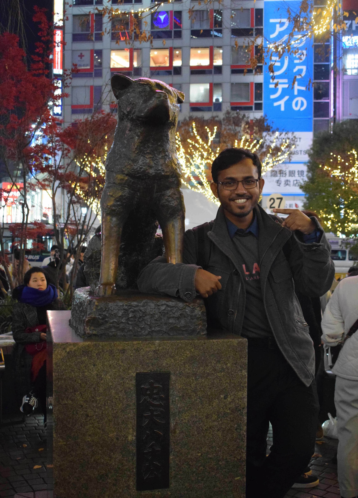

I'm interested & skilled in
About me



I grew up in Chandpur, where the Ganges, Brahmaputra and Meghna meet, and I have been curious ever since about how rivers, land and people shape each other. That curiosity took me from community fieldwork in Bangladesh to an Erasmus Mundus master’s in global change ecology and biodiversity management, across Spain, the UK, Mexico and Portugal.
I am convinced that climate change and biodiversity loss cannot be tackled separately. Renewable energy is essential, yet the transition itself can put new pressure on ecosystems, landscapes and local communities. My master’s thesis asks where spatial planning can place solar farms with the least conflict, using GIS, remote sensing and predictive spatial models, so that decisions rest on evidence rather than guesswork.
Earlier work in Bangladesh, including a just energy transition project and participatory mapping with communities, showed me how much the social and ecological sides of a problem depend on each other. I want to connect biodiversity assessment with the values people attach to nature, and to know, in the end, what actually works for nature and for the people who live with it.